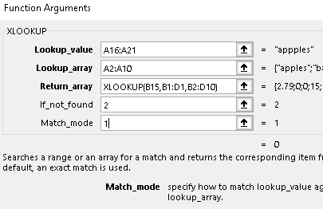
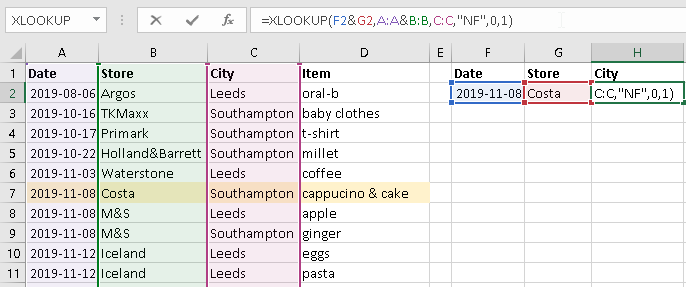
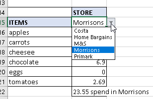
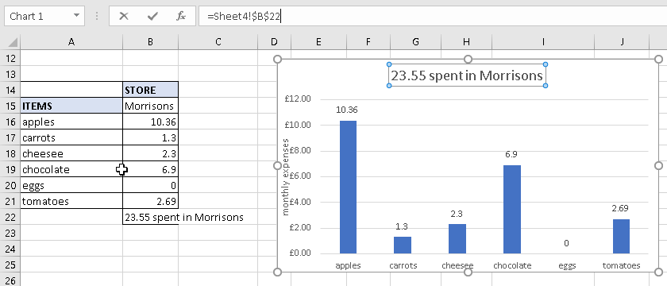
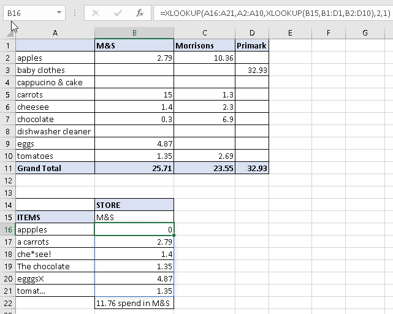

I always used VLOOKUP formula, I could do it even with my eyes closed, but now when I have Excel 365 I can use XLOOKUP, which is similar but not the same. When I have learned this new functionality I found out that I also have an option to use dynamic array formulas in a very easy way, which are like magic to me.
What XLOOKUP does?

Microsoft definition:
Searches a range or an array for a match and returns the corresponding item from a second range or array. By default, an exact match is used.
From MS Excel help
My definition:
I can search my value in one or more columns, even vertically and horizontally. And I can get data kind of sorted or matched using a specific argument from match_mode or search_mode.
Function Arguments:
First three Function Arguments are mandatory:
Lookup_value – is the value to search for.
Lookup_array – is the value or range search (a place where I search).
Return_array – is the array or range to return (what I need to get).
These three Function Arguments are optional (make the results more specific way):
If_not_found – returned if no match is found (like TEXT with "" or just empty).
Match_mode – specify how to match lookup_value against the values in lookup_array, arguments:
0 Exact match -1 Exact match or next smaller item 1 Exact match or next larger item 2 Wildcard character match
Search_mode – specify the search mode to use. By default, a 'first-to-last search' will be used, arguments:
1 Search first-to-last -1 Search last-to-first 2 Binary search (sorted ascending order) -2 Binary search (sorted descending order)
First example. Easy search + dynamic fill.
In my table, I have columns with Date, Store, City, and Item. As a result of using the XLOOKUP function, I would like to see where (STORE and CITY) I did my grocery on a specific day (DATE). I need to write the XLOOKUP function in two cells G2 and H2, and I will do multiple column research.
G2 – STORE
My Lookup_value will be the DATE which I choose 2019-11-08 = F2.
My Lookup array will be the DATE column = A:A.
My Return_array will be the STORE name from the STORE column = B:B.
If_not_found = I will put "NF".
Match_mode = 0 as exact match.
Search_mode = 1 as search first-to-last.
=XLOOKUP(F2,A:A,B:B,"NF",0,1)
H2 – CITY
My Lookup_value will be the DATE and STORE from F2&G2
My Lookup array will be the DATE and STORE columns from table = A:A&B:B.
My Return_array will be the CITY name from the CITY column = C:C.
If_not_found = I will put "NF".
Match_mode = 0 as exact match.
Search_mode = 1 as search first-to-last.
=XLOOKUP(F2&G2,A:A&B:B,C:C,"NF",0,1)

XLOOKUP in multiple columns.
In this example, I can use dynamic array formulas. I choose a few dates and I change my XLOOKUP formula in G2 and I choose range F2:F9, so my G2:G9 will be dynamically filled. No need to copy down. The dynamically filled cells are present in the thin blue colour border.
=XLOOKUP(F2:F9,A:A,B:B,"NF",0,1)

XLOOKUP and The Dynamic array formulas.
Second example. Vlookup and Hlookup in Xlookup.
In my table, I have columns with Item, Store, and monthly expenses. As a result of using the XLOOKUP function, I would like to see where (STORE) I did my specific purchase. I need to write two XLOOKUP functions in one cell B16, and I will do vertical and horizontal column/row research. The value will be dynamically added.
XLOOKUP no. 1 – it will be a Return_array of the XLOOKUP no. 2.
B16 – XLOOKUP no. 1.
My Lookup_value will be the STORE I choose Morrisons = B15.
My Lookup_array will be the STORE from my source table = B1:F1.
My Return_array will be the amount from my source table = B1:F10.
=XLOOKUP(B15,B1:F1,B2:F10)
B16 – XLOOKUP no. 2.
My Lookup_value will be specific items I choose in the result of my returned data that will spill in B16:B21 =A16:A21.
My Lookup array will be the items from my source table = A2:A10.
My Return_array will be my XLOOKUP no. 1.
=XLOOKUP(A16:A21,A2:A10,XLOOKUP(B15,B1:F1,B2:F10))

XLOOKUP in XLOOKUP as a return array.

Dropdown list with all of my stores.
Besides, I used a dropdown list with all of my stores, and also I would like to see my data on the chart which is dynamic, so when I choose a different store from my list I will see in my chart different data and my chart title will change. I have to modify the cell with SUM in B22.
=SUM(B16#)&" spent in "&B15
and chart title refers to B22.

SUM & text

SUM & Text in the title of the chart
Third example. Wildcard character match.
I was wondering how this optional argument Match_mode works with the 2=Wildcard character match. Where I can make a "mistake" in value to match?
I prepared a similar table like in my previous example, but in the Lookup_value argument, I added extra characters, which a little bit changes the word.
It looks like the single "mistake" in the middle or at the end of the word of matching value does not make any changes in XLOOKUP results, but when a "mistake" is before the word it changes XLOOKUP results.
It found the price of "tomatoes" but in the results of "the chocolate" or "a carrot" with the price of "apples", but it found the exact price of "egggsX" or "che*see!".

Match mode with 2
I am glad that I have learned how the XLOOKUP works and how I can use the dynamic array formulas. The more examples I did, the more these functions surprised me.
Thank you, Magda